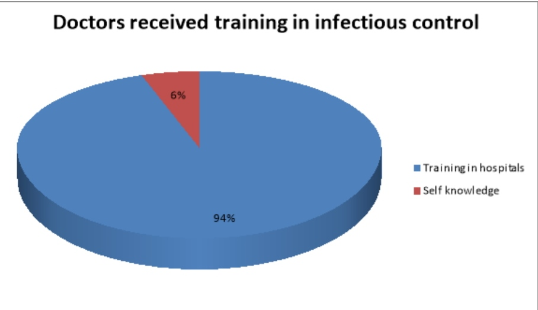
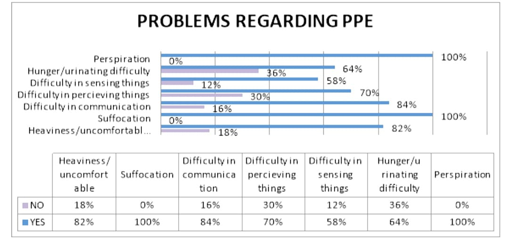
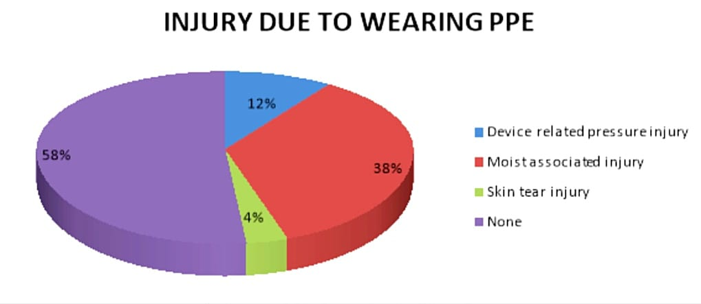
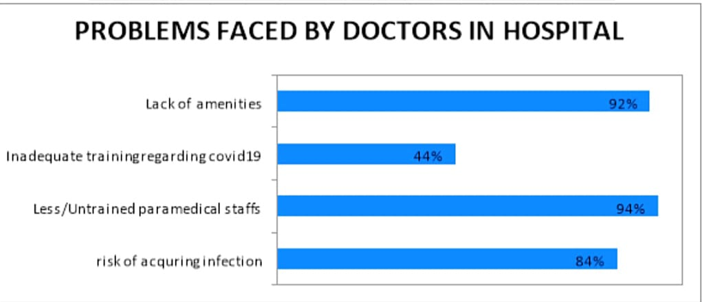
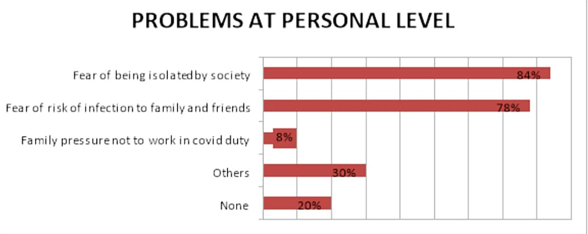
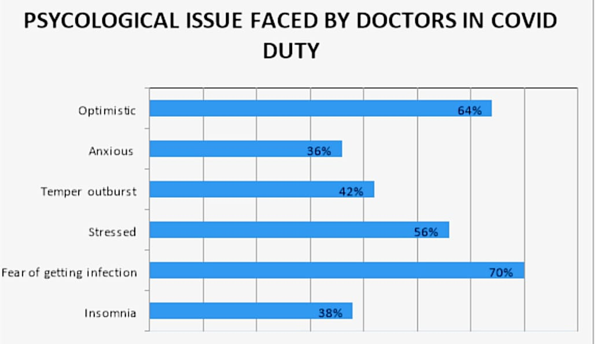

Once again the globe is facing the menace of a lethal virus. After the Ebola crisis in Africa, the WHO declared the novel coronavirus to be a pandemic, started spreading from Wuhan city in China in December 2019. We need to acknowledge and appreciate the efforts of doctors in this covid19 crisis for performing their duties without even thinking of being infected by the virus and risking their life. Doctors are at the forefront in the war against the COVID-19 pandemic, they are facing many obstacles in performing their duties.. Doctors are going through many difficulties in isolation duty. Physicians have been called upon to work under radically new situations, to feel exhausted due to heavy workloads and protective equipment, to fear of being exposed and infecting others, to feel helpless in coping with patients' conditions,the challenges faced by healthcare professionals (doctors and nurses) during COVID-19 in world
As pandemic hit the country many hospitals and institution gave training regarding the infectious control and the basic safety measures and also received training in donning and doffing.
Figure 1: In this study it is seen that 6% of them have received training and 94% of them have gained self-knowledge in infectious control. Most of them have received training in donning and doffing i.e. around 98% of them
There were so many issue that doctors were facing while wearing PPE and working in isolation duty. Like interruption while doing work due to PPE are uncomfortable, difficulty in breathing, feel like exhausted in long working hours. They even find difficulty in identifying things due to glare and fog in PPE face shield. This can also occur in individual those, who are wearing vision spectacles. Another problem is decreased tactile sensation i.e. reduced sensation and all these leads to create problems in palpating veins, taking samples, putting i.v. catheters.
Figure 2: In the analysis it seen that almost all i.e. 100% were sweating the entire long in ppe as soon as they wear. 64% experiences hunger and urinating difficulty, as once we wear ppe can only remove it after completing the duty. 58% (difficulty in sensing things), 70% feels (difficulty in perceiving things), 84% experiences difficulty in communication.
As we all know the importance of the PPE kit i.e.it includes layers of masks, gloves, hooded caps, face shields, goggles, gowns and shoe covers for long hours makes them drained, uncomfortable and more over cases PPE related problems like rash, itching and injuries. As sweats accumulates and irritates the skin leads to redness, rash and itching. In study it is noted that 40% of them have got rash, 54% experiences itching and 16% got the injuries related to PPE.
Figure 3: The injuries associated with ppe are device related injury(58%), moist associated injury due to perspiration(38%), skin tear injury(4%) and among them 58% have no complain of injury related to ppe. The most commonly mentioned dermatosis was irritant contact dermatitis (ICD; 39.5 per cent followed by friction dermatitis (25.5 percent ). Goggles was perhaps the most common delinquent agent among all the PPEs that triggered certain dermatosis (51.92 per cent), followed by N95 masks (30.77 per cent) and face shields (17.31 percent ). (17.31 percent). (17.31 percent ). (17.31 percent ). Nasal bridge (63 per cent) was the most common anatomical site affected by dermatosis followed by cheeks and chin (26 percent ). There was however a substantial overlap between various dermatosis with multiple site affliction.
As the time is passing, cases are increasing and difficulties are also increasing. 92% doctors have experienced lack of amenities such as gloves, mask, face shield, good quality PPE. Their also been increased workload and also staff decreased due to quarantine after isolation duty and acquiring infection while working in covid duty.
Figure 4: It is also seen that doctors in isolation duty have experienced, less or untrained paramedical staffs i.e. (94%) as they do not have much experience about the treatment protocol and about the medications and management of covid19 positive patient. Doctors they too fear of acquiring infection are 84%.
Doctors, managing and treating covid positive patients have fear of getting infection and among them 84% of being isolated by the society. 8% of them have family pressure not to work in isolation wards. Instead of all these they are working, even by knowing this that their family and friends are at high risk because of them (78%). Other problems includes emotional breakdown disturbed daily activity.
It is to assess the psychological problems like stress, anxiety, depression and tension among the doctors working in covid19 isolation wards. Study states that among 50 doctors, most of them were optimistic, about 36% were anxious and 56% of them were stressed. 70% of them have fear of getting infection and 82% of them are going through mental stress. It seems that there were some possible cause of emotional stress and that are change in environment, disease related issues, acquiring infection, increased work load and health of family and self. It is seems that 42% have experienced temper outburst. 38% of them have also experience insomnia. “Front-line service staff have a vital role to play in delivering services to infected patients. Working in such an extraordinary environment, typically outside their capability and at risk of illness,
